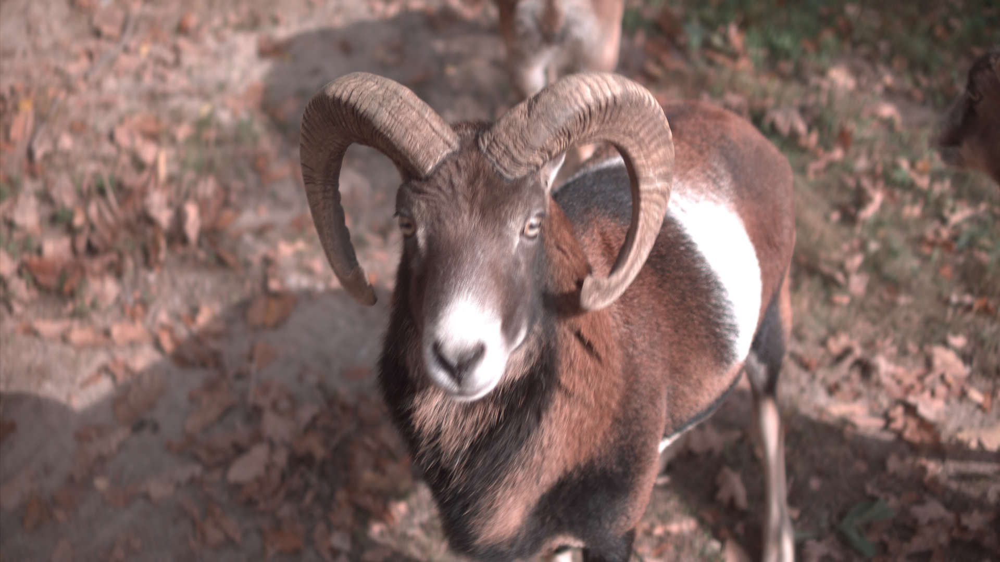
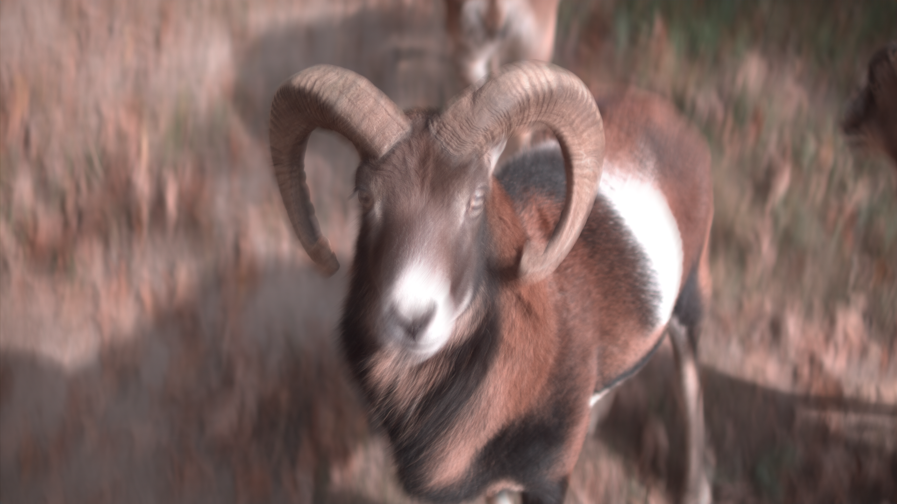
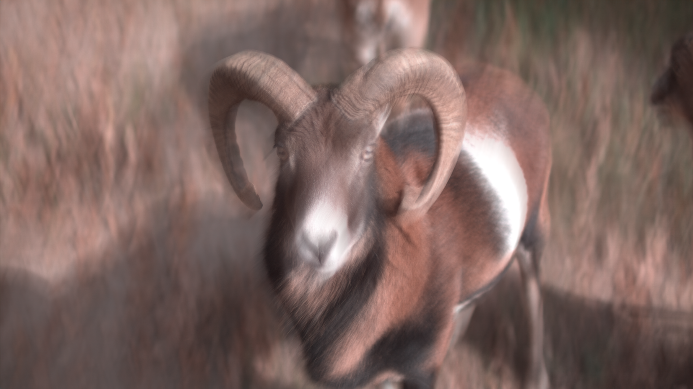
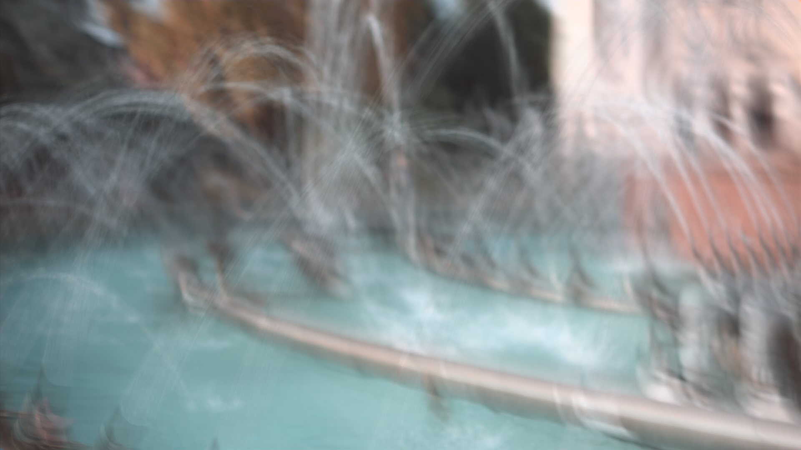

Dataset
The MIORe and VAR-MIORe datasets were collected using the Chronos 2.1-HD from Kron Technologies, paired with multiple lenses.
The diverse scenarios help us leverage naturally occurring differences in motion amplitude and patterns.






